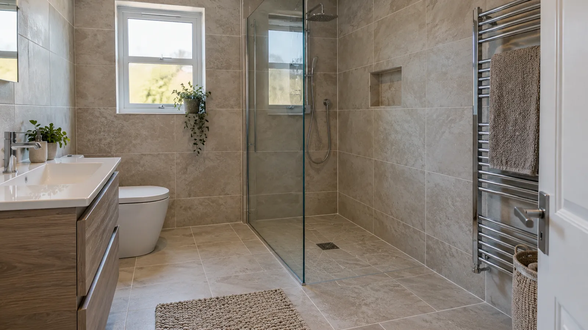
Bathroom tiling
Porcelain floors, ceramic walls and mosaic niches, with shower falls, tile set-out and neat vanity edges.
View service details →Tiling services
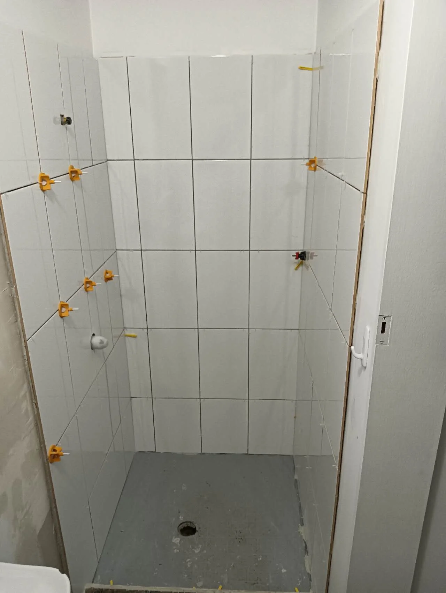
We install and repair wall, floor and outdoor tiles, from kitchen splashbacks to poolside terraces. We handle preparation and installation; book an on-site assessment to get your project moving. For membrane work, explore our waterproofing services.
DISCUSS YOUR TILING PROJECT ↗0425 170 688Looking for roof waterproofing? Open roof waterproofing services →
Looking for bathroom waterproofing? Open bathroom waterproofing services →
Looking for kitchen waterproofing? Open kitchen waterproofing services →
Looking for balcony waterproofing? Open balcony waterproofing services →
Looking for laundry waterproofing? Open laundry waterproofing services →
Looking for pool waterproofing? Open pool waterproofing services →
Looking for external wall, edge and corner waterproofing? Open external wall, edge and corner waterproofing services →
Looking for other damp areas? Open other damp areas services →
Open the service that fits your surface and the work you need assessed.
Wall and floor finishes for rooms, kitchens and wet areas.

Porcelain floors, ceramic walls and mosaic niches, with shower falls, tile set-out and neat vanity edges.
View service details →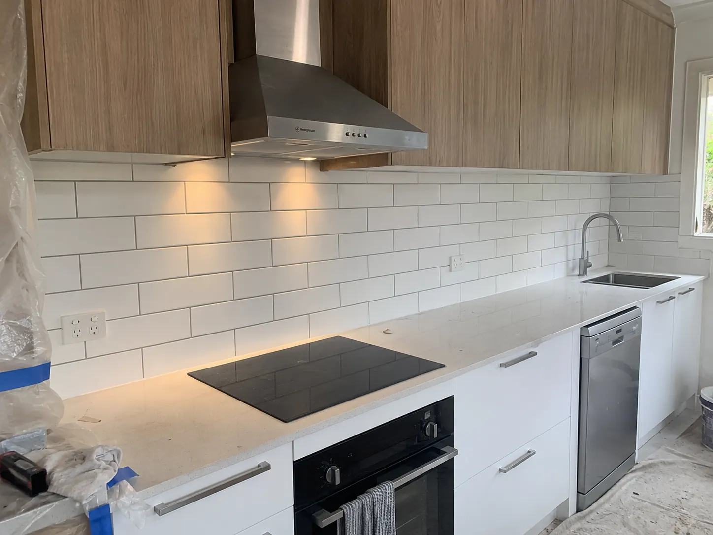
Ceramic subway tiles, porcelain or mosaic splashbacks, laid in straight or herringbone patterns with precise outlet cuts.
View service details →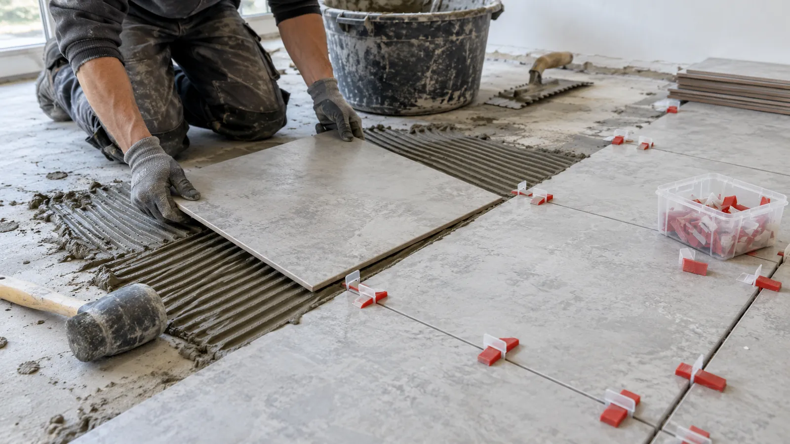
Porcelain and ceramic floor tiles, including large-format layouts, with base preparation, grout alignment and doorway transitions.
View service details →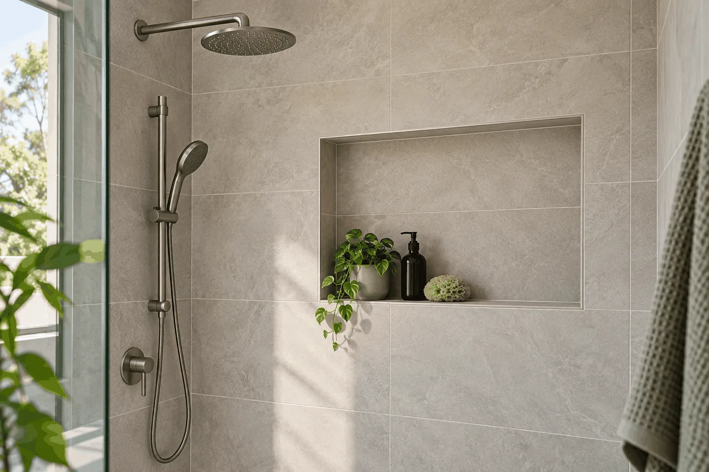
Ceramic, porcelain and mosaic feature walls, with aligned shower niches, planned cuts and finished external edges.
View service details →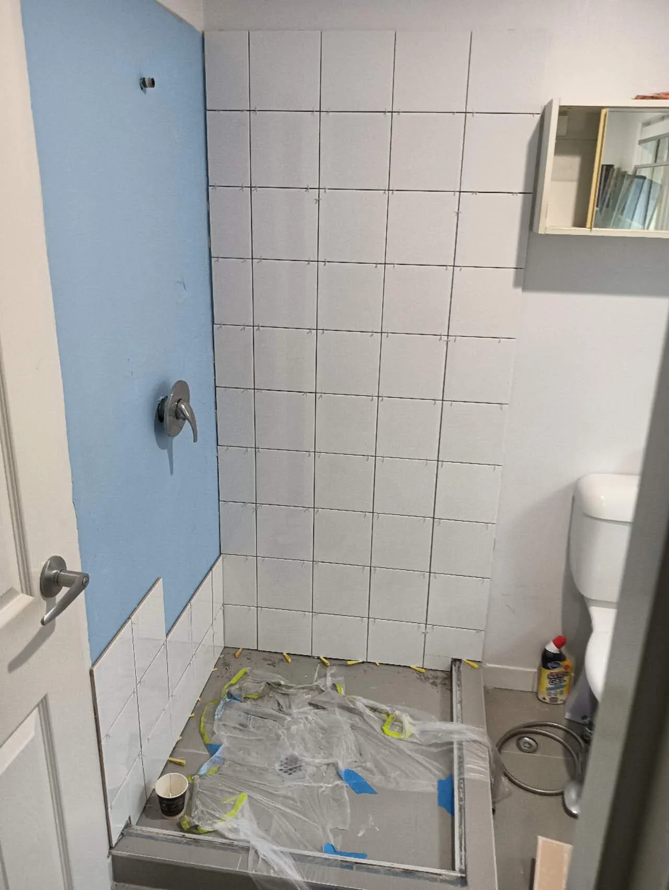
Laundry floors, entryways and small wall or floor projects, with tile format, substrate and adjoining finishes planned together.
View service details →Local tile replacement, grout renewal and flexible shower seals.
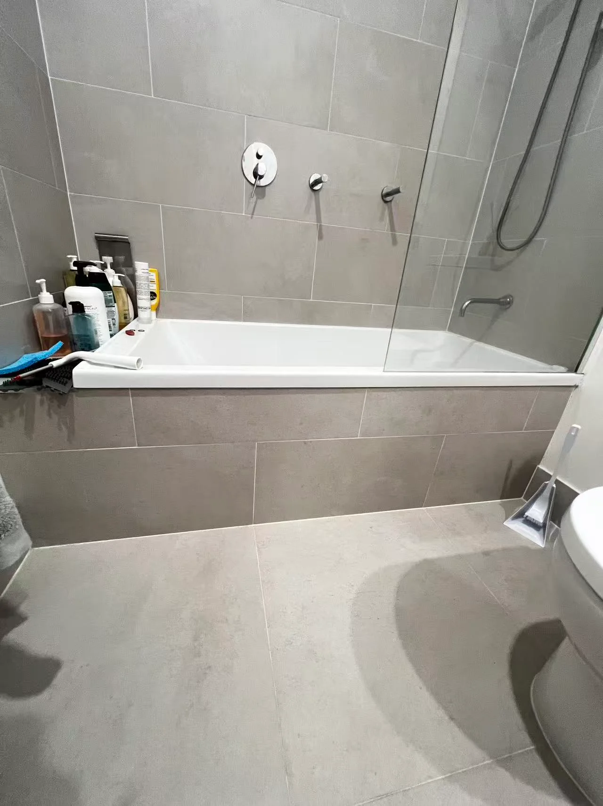
Cracked porcelain, chipped ceramic and loose floor tiles: matching replacements, base repairs and careful joint finishing.
View service details →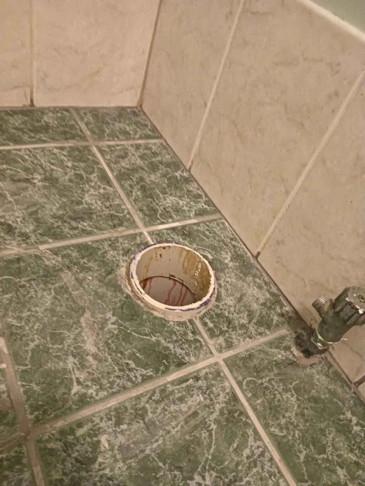
Remove deteriorated cement grout and renew wall or floor joints, with suitable cement-based or epoxy grout and colour matching.
View service details →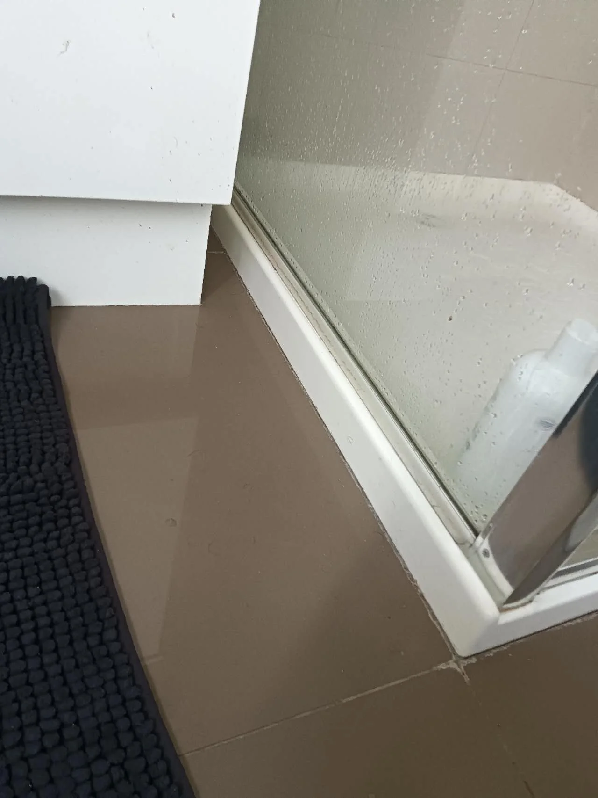
Shower regrouting and silicone replacement around tiled corners, screens and shower bases, with flexible joints kept distinct.
View service details →Balconies, courtyards and poolside surfaces exposed to weather.
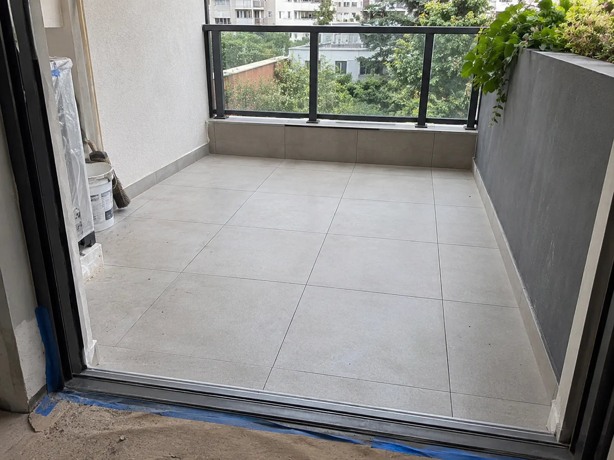
Outdoor porcelain balcony tiles and retiling, with drainage falls, membrane junctions and door-threshold levels coordinated.
View service details →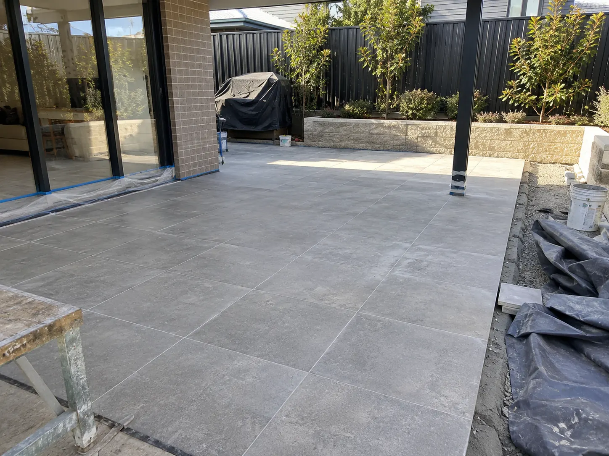
Outdoor porcelain tiles for courtyards and covered alfresco areas, with steps, drainage and movement joints set out together.
View service details →
Outdoor porcelain pool surrounds and coping tiles, with wet-area grip, edge profiles, drainage and flexible junctions considered.
View service details →Board installation, with base preparation and doorway transitions defined in your quote.
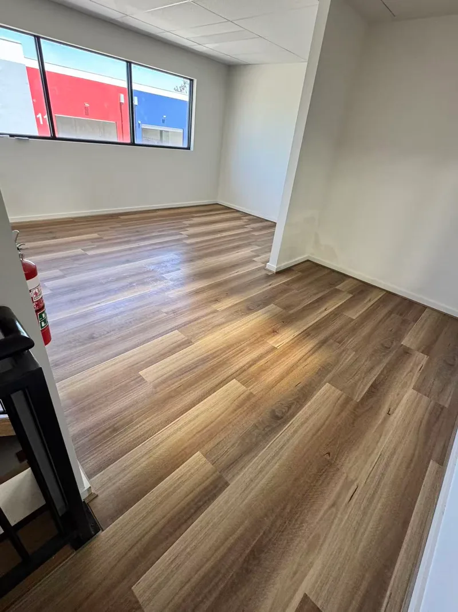
Timber floor installation, base preparation, board layout and doorway transitions.
View service details →We install porcelain and ceramic floor and wall tiles, subway splashbacks, and ceramic or glass mosaics for niches and feature areas. For bathroom floors and pool surrounds, we check the selected product’s wet-use suitability and slip information; for shower walls and kitchen splashbacks, we compare surface texture, water marks, cooking splashes and grout care.
We plan base preparation, tile layout, adhesive coverage, drainage falls and edge details around the actual tile size, thickness and location. Tell us your preferred product and installation area so we can confirm material responsibilities, work sequencing and the scope in your written quote.